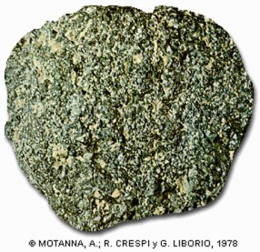

|
Cúrio |

Utilizações:
-Uma das aplicações do isótopo 244Cm é como fonte de partículas alpha para equipamentos de espectrômetros de raios X.Tal equipamento está instalado em diversas sondas enviadas para o planeta Marte
-Pode ter uso em geradores de energia termoelétricos
O cúrio é feito artificialmente.
 -Radioativo
-Radioativo